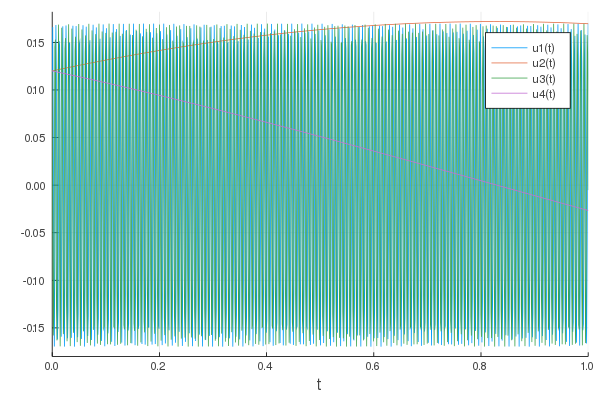

Numerical method
Two-scale formulation
First, rewrite equation (1) using the variable change $w(t)=\exp(-(t-t_{0})A/\varepsilon) u(t)$ to obtain
\[\frac{d w(t)}{dt} = F\Big( \frac{t-t_{0}}{\varepsilon}, w(t) \Big), \;\;\; w(t_{0})=u_{0}, \;\; \varepsilon\in ]0, 1],\]
where the function $F$ is expressed from the data of the original problem (1)
\[F\Big( \frac{s}{\varepsilon}, w \Big) = \exp(-sA/\varepsilon) \; f( \exp(sA/\varepsilon), \; w).\]
We then introduce the function $U(t, \tau), \tau\in [0, 2 \pi]$ such that $U(t, \tau=(t-t_{0})/\varepsilon) = w(t)$. The two-scale function is then the solution of the following equation
\[\frac{\partial U}{\partial t} + \frac{1}{\varepsilon} \frac{\partial U}{\partial \tau} = F( \tau, U), \;\;\; U(t=t_{0}, \tau)=\Phi(\tau), \;\; \varepsilon\in ]0, 1], \;\;\;\;\;\;\;\;\;\; (2)\]
where $\Phi$ is a function checking $\Phi(\tau=0)=u_{0}$ chosen so that the $U$ solution of (2) is regular (see Philippe Chartier , Nicolas Crouseilles , Mohammed Lemou , Florian Méhats (2015) and Philippe Chartier , Mohammed Lemou , Florian Méhats , Xiaofei Zhao (2020).
Discretization
The numerical method is based on a suitable time discretization of equation (2). In the direction $\tau$, a spectral method is used, while for the time $t$, an exponential Adams-Bashforth method allows to build a high order method (see Philippe Chartier , Mohammed Lemou , Florian Méhats , Xiaofei Zhao (2020)). The suitable choice of the initial condition is required to ensure high order accuracy. From a numerical point of view, a "butterfly" technique is introduced here (going back and forth around the initial time).
Initialization
Let r be the order of the method $AB_r$.
Let $\Delta t$ the time step, for $i \in \{r, -(r-1), \ldots, r-1, r\}$, we note $u_i = u(t_0+i \Delta t)$.
Let $r'$ be the orders of the intermediate AB methods we will use.
If $u_{k}$ is known with a precision of ${\mathcal O}(\Delta t^{r'+1})$, and for $r' \geq 2, u_{k-1}, \ldots, u_{k-r'+1}$ are known with a precision of ${\mathcal O}(\Delta t^{r'})$ then we can calculate $u_{k+1}$ with a precision of ${\mathcal O}(\Delta t^{r'+1})$ with the method $AB_{r'}$.
Similarly, if $u_{k}$ is known with a precision of ${\mathcal O}(\Delta t^{r'+1})$, and for $r' \geq 2, u_{k+1}, \ldots, u_{k+r'-1}$ are known with a precision of ${\mathcal O}(\Delta t^{r'})$ then we can calculate $u_{k-1}$ with a precision of ${\mathcal O}(\Delta t^{r'+1})$ with the method $AB_{r'}$.
Algorithm
- With the method $AB_1$, from $u_0$ we calculate $u_{-1}$ with a precision of ${\mathcal O}(\Delta t^2)$
- With the method $AB_2$, starting from $u_{0}$ and $u_{-1}$, we calculate $u_{1}$ with a precision of ${\mathcal O}(\Delta t^3)$
- For $r' = $3 to $r' = r$.
- For $k=1$ to $k=r'-1$
- With the method $AB_{r'-1}$, from $u_{1-k}, u_{2-k}, \ldots,u_{r'-1-k}$, we calculate $u_{-k}$ with a precision of ${\cal O}(\Delta t^{r'})$
- For $k=1$ to $k=r'-1$
- With the method $AB_{r'}$, from $u_{k-1}, u_{k-2}, \ldots,u_{k-r'}$, we calculate $u_{k}$ with a precision of ${\mathcal O}(\Delta t^{r'+1})$
- For $k=1$ to $k=r'-1$
At the end of this algorithm, the values $u_0, u_1, \ldots u_{r-1}$ are known with a precision of ${\mathcal O}(\Delta t^{r+1})$, we can launch the algorithm $AB_r$.
The Adams-Bashforth Method
For an Adams-Bashforth method of order $r$ in time and spectral $\tau$, we first introduce a mesh in the $\tau$ direction.
$\tau_{\ell} = \ell \Delta \tau, \ell = 0, \ldots, N_{\tau}-1$. Where $N_{\tau}$ is the number of points of discretization. If we apply the Fourier transform to the two-scale equation, we obtain
\[\frac{\partial \hat{U}_\ell}{\partial t} + \frac{i\ell}{\varepsilon}\hat{U}_\ell = \hat{F}_\ell(t), \;\; \ell=-N_\tau/2, \dots, N_\tau/2-1,\]
with
\[U(t, \tau_k) = \sum_{\ell=-N_{\tau}/2}^{N_{\tau}/2-1} \hat{U}_{\ell}(t) e^{i\ell k 2\pi/N_{\tau}} \;\;\; \text{ and } F(\tau_k, U(t, \tau_k)) = \sum_{\ell=-N_{\tau}/2}^{N_{\tau}/2-1} \hat{F}_{\ell}(t) e^{i\ell k 2\pi/N_\tau}.\]
and the inverse (discrete) Fourier transform formulae
\[\hat{U}_{\ell}(t) = \frac{1}{N_{\tau}}\sum_{k=0}^{N_{\tau}-1} U(t, \tau_k) e^{-i\ell k 2\pi/N_{\tau}}\;\;\; \text{ and } \hat{F}_{\ell}(t) = \frac{1}{N_{\tau}}\sum_{k=0}^{N_{\tau}-1} F(\tau_k, U(t, \tau_k))e^{-i\ell k 2\pi/N_{\tau}}.\]
If we wish to calculate $\hat{F}_{\ell}$ from $\hat{U}_{\ell}$ we have the following formula
\[F(\tau_k,U(t, \tau_k)) = e^{-\tau_k A}f(e^{\tau_k A}U(t, \tau_k)) \;\;\]
from which the Fourier transform is calculated in $\tau$ from the discrete Fourier transform formulas above.
Now, given a time step $\Delta t>0$ and a discretization in time $t_n=n\Delta t$, we can write the following Duhamel formula ($n\geq 0$)
\[\hat{U}_{\ell}(t_{n+1}) = e^{-i\ell\Delta t/\varepsilon}\hat{U}_{\ell}(t_{n}) + \int_0^{\Delta t} e^{-i\ell(\Delta t -s)/\varepsilon} \hat{F}_\ell(t_n+s)ds.\]
Thus, to obtain a $(r+1)$ scheme, we can approaches the function $\hat{F}_\ell(t_n+s)$ by the Lagrange polynomial of order $r$ interpolator at points $t_{n-j}, j=0, \dots, r$. This polynomial is written
\[\hat{F}_\ell(t_n+s) \approx \sum_{k=0}^r \Big(\Pi_{j=0, j\neq k}^r \frac{s+j \Delta t}{(j-k)\Delta t} \Big) \hat{F}_\ell(t_n-t_j), \;\; n\geq 0.\]
Thus, from this approximation, we integrate exactly, which requires the following formulas
\[p^{[r]}_{\ell, j} = \int_0^{\Delta t}e^{-i\ell(\Delta t -s)/\varepsilon}\Big( \Pi_{j=0, j\neq k}^r \frac{s+j \Delta t}{(j-k)\Delta t}\Big) ds,\]
for each $j$ and $\ell$ such that $0\leq j\leq r, \; \ell=-N_\tau/2, \dots, N_\tau/2-1$. These coefficients $p^{[r]}_{\ell, j}$ can be pre-calculated and stored once and for all. Thus, the schema is finally written
\[\hat{U}_{\ell}^{n+1}= e^{-i\ell\Delta t/\varepsilon}\hat{U}_{\ell}^n + \sum_{j=0}^r p^{[r]}_{\ell, j} \hat{F}_\ell^{n-j},\]
with $\hat{U}_{\ell}^n \approx \hat{U}_{\ell}(t_n)$ and $\hat{F}_\ell^{n-j}\approx \hat{F}_\ell(t_{n-j})$.
We can verify that the truncation error in this schema is ${\mathcal O}(\Delta t^{r+1})$, once the initial values $\hat{U}_\ell^1, \dots, \hat{U}_\ell^r$ have been calculated.
Non-homogeneous case $f(u, t)$
Here we consider the case where $f$ depends on the variable $t$.
\[\frac{d u(t)}{dt} = \frac{1}{\varepsilon} A u(t) + f(u(t), t), \;\;\; u(t=t_{0})=u_{0}, \;\; \varepsilon\in ]0, 1] \;\;\;\; (3)\]
The non-homogeneous case (3) falls under (1), by entering the variable $\theta : t \in [t_{0}, t_{\text{end}}] \mapsto \theta(t) = t\in \mathbb{R}$ which allows us to reformulate the non-homogeneous case (3) into a homogeneous problem of the form (1). Indeed, we rephrase (3) as follows
\[\begin{aligned} \frac{d u(t) }{dt} & = \frac{1}{\varepsilon} Au(t) + f(u(t), \theta(t)), \\ \frac{d \theta(t) }{dt} & = 1 \end{aligned}\;\;\;\;(4)\]
with the initial condition $u(t_{0})=u_{0}, \theta(t_{0})=t_{0}$. Thus, the problem (4) is rewritten into an equation
satisfied by $y: t\in [t_{0}, t_{fin}] \mapsto y(t) =(u(t), \theta(t))\in \mathbb{R}^{n+1}$
\[\frac{d y}{dt} = \frac{1}{\varepsilon} \tilde{A} y + g(y), \;\; y(t_{0})=(u_{0}, t_{0}),\]
with $\tilde{A}\in{\mathcal M}_{n+1, n+1}(\mathbb{R})$
\[\tilde{A}= \left( \begin{array}{cccc} & & & 0 \\ & A & & 0 \\ & & & 0 \\ 0 & 0 & 0 & 0 \end{array} \right) \;\;\;\; \text{ and } \;\;\;\; g(y)=g(u, \theta) = \left( \begin{array}{cccccc} f(u, \theta) \\ 1 \end{array} \right) \in \mathbb{R}^{n+1}.\]
Use
Input parameters
The input arguments use the same format as the ODE package.
Thus, first of all, we must define the arguments necessary to construct the problem (1), namely
- the $f$ function (in the form Julia)
- the initial condition $u_{0}$.
- the initial time $t_{0}$ and final time $t_{fin}$.
- the second parameter of the
- the $A$ matrix
- $\varepsilon \in ]0, 1]$
pkg'add https://gitlab.inria.fr/ua/HiOscSolver.jl.git'
using HiOscSolver
A=[0 0 1 0 ; 0 0 0 0 ; -1 0 0 0 ; 0 0 0 0]
fct = (u,p,t) -> [ 0, u[4], 2*u[1]*u[2], -u[2] - u[1]^2 + u[2]^2 ]
epsilon= 0.0001
t_min=0.0
t_max=3.0
u0 = [0.55, 0.12, 0.03, 0.89]
prob = HiOscODEProblem(fct, u0, (t_min,t_max), missing, A, epsilon) From the prob problem, we can now switch to its digital resolution.
To do this, the numerical parameters are defined
- the number of time slots $N_t$ which defines the time step $\Delta t = \frac{t_{\text{end}}-t_0}{N_t}$
- the $r$ order of the method
- the number of $N_\tau$ points in the $\tau$ direction...
- the order of preparation $q$ of the initial condition
The default settings are : $N_t=100$, $r=4$, $N_\tau=32$ and $q=r+2=6$ To solve the problem with the default parameters, just call the solve command with the problem already defined as parameter
sol = solve(prob) Which is equivalent to this call
sol = solve(
prob;
nb_tau=32,
order=4,
order_prep=6, # by default : order + 2
dense=true,
nb_t=100,
getprecision=true, # by default : dense
verbose=100,
par_u0=missing,
p_coef=missing,
) Exhaustive definition of the parameters
prob: problem defined byHiOscODEProblemnb_tau=32: $N_{\tau}$order=4: order $r$ of the methodorder_prep=order+2: order of preparation of initial datadense=true: indicates whether or not to keep the data from the fourier transform, ifdense=false, processing is faster but interpolation can no longer be done.nb_t=100: $N_t$getprecision=dense: indicates whether the accuracy is calculated, the method used to calculate the accuracy multiplies the processing time by 2.verbose=100: trace level, ifverbose=0then nothing is displayed.par_u0: If we have to make several calls tosolvewith the same initial data and in the same order, we can pass in parameter the already calculated data.p_coef: table with the coefficients of the Adams-Bashforth method. This array can be used to optimize several calls with the same parameters.
Exit arguments
As an output, a structure of type HiOscODESolution. This structure can be seen as a function of t, it can also be seen as an array of size $N_t + 1$. This structure also contains the absprec and relprec fields which are the absolute and relative precisions, respectively, calculated.
Example
julia> sol = solve(prob);
solve function prob=HiOscODEProblem with uType Array{Float64,1} and tType Float64. In-place: nothing
timespan: (0.0, 3.0)
u0: [0.55, 0.12, 0.03, 0.89],
nb_tau=32, order=4, order_prep=6, dense=true,
nb_t=100, getprecision=true, verbose=100
x 100/100
99/99
julia> t=2.541451547
2.541451547
julia> sol(t)
4-element Array{Float64,1}:
-0.536667845897295
1.593257176840297
-0.12420061944907212
0.7184374612958457
julia> sol[end]
4-element Array{Float64,1}:
0.36316109321808354
2.0379196624858955
-0.4141248638226731
1.3087136174628513
julia> sol(3.0)
4-element Array{Float64,1}:
0.36316109321808626
2.037919662485913
-0.4141248638226772
1.308713617462862
julia> sol.absprec
2.4721022528746903e-5
julia> sol.relprec
9.952927361881597e-6
To view the result, you can also use Plot, for example
using Plots
plot(sol) This results in
If you want to save the result in a file (pdf or png) here are the commands
using Plots
p = plot(sol)
savefig(p,"out/plot.png")Examples
Hénon-Heiles
We consider the system of Hénon-Heiles satisfied by $u(t)=(u_1, u_2, u_3, u_4)(t)$.
\[\frac{d u }{dt} = \frac{1}{\varepsilon} Au + f(u), \;\;\; u(0)=u_0\in\mathbb{R}^4,\]
where $A$ and $f$ are selected as follows
\[A= \left( \begin{array}{cccc} 0 & 0 & 1 & 0 \\ 0 & 0 & 0 & 0 \\ -1 & 0 & 0 & 0 \\ 0 & 0 & 0 & 0 \end{array} \right) \;\;\;\; \text{ and } \;\;\;\; f(u) = \left( \begin{array}{cccc} 0 \\ u_4\\ -2 u_1 u_2\\ -u_2-u_1^2+u_2^2 \end{array} \right).\]
one chooses for example, $\varepsilon=0.001$ and $u_0 = (0.12, 0.12, 0.12, 0.12)$
using HiOscSolver
A=[0 0 1 0 ; 0 0 0 0 ; -1 0 0 0 ; 0 0 0 0]
fct = (u,p,t) -> [ 0, u[4], 2*u[1]*u[2], -u[2] - u[1]^2 + u[2]^2 ]
epsilon= 0.001
t_min=0.0
t_max=1.0
u0 = [0.12, 0.12, 0.12, 0.12]
prob = HiOscODEProblem(fct, u0, (t_min,t_max), missing, A, epsilon)
sol = solve(prob);
using Plots
plot(sol)
Charged particle
A system of charged particles under the effect of an external electro-magnetic field is considered to be $(E(t, x), B(t, x))\in \mathbb{R}^6$.
Particles are dynamically described by their position $x(t)\in\mathbb{R}^3$ and their speed $v(t)\in\mathbb{R}^3$. We'll index by $i$ the $i$-th component of a vector. Newton's equations applied to a particle can be written as
\[\begin{aligned} \frac{d x(t) }{dt}&= v(t) \\ \frac{d v(t) }{dt}&= \frac{e}{m} \left[E(t, x(t)) + v(t)\times B(t, x(t))\right]. \end{aligned}\]
We will assume that the magnetic field is written $B(t, x)=(0, 0, 1)^T$ and under a certain scaling, we consider the following equation
\[\begin{aligned} \frac{d x_1(t) }{dt} &= \frac{1}{\varepsilon}v_1(t) \\ \frac{d x_2(t) }{dt} &= \frac{1}{\varepsilon} v_2(t) \\ \frac{d x_3(t) }{dt} &= v_3(t) \\ \frac{d v_1(t) }{dt} &= E_1(t, x(t)) + \frac{1}{\varepsilon}v_2(t)\\ \frac{d v_2(t) }{dt} &= E_2(t, x(t)) - \frac{1}{\varepsilon}v_1(t)\\ \frac{d v_3(t) }{dt} &= E_3(t, x(t)) \end{aligned}\]
which is rewritten as follows
\[\frac{d u(t) }{dt}= \frac{1}{\varepsilon}A u(t) + F(t, u(t)),\]
where the unknown vector $u(t)=(x(t), v(t))\in\mathbb{R}^6$, $A$ is a square matrix of size $6\times 6$ and $F$ is a function with a value in $\mathbb{R}^6$. $A$ and $F$ are given by
\[A= \left( \begin{array}{cccccc} 0 & 0 & 0 & 1 & 0 & 0 \\ 0 & 0 & 0 & 0 & 1 & 0 \\ 0 & 0 & 0 & 0 & 0 & 0 \\ 0 & 0 & 0 & 0 & 1 & 0 \\ 0 & 0 & 0 & -1 & 0 & 0 \\ 0 & 0 & 0 & 0 & 0 & 0 \end{array} \right) \;\;\;\; \text{ and } \;\;\;\; F(t, u(t)) = \left( \begin{array}{cccccc} 0 \\ 0\\ u_6(t)\\ E_1(t, u_1(t), u_2(t), u_3(t))\\ E_2(t, u_1(t), u_2(t), u_3(t)\\ E_3(t, u_1(t), u_2(t), u_3(t) \end{array} \right).\]
We can consider the following $E=(E_1, E_2, E_3)$ function
\[E(t, x) = \left( \begin{array}{ccc} \cos(x_1/2)\sin(x_2)\sin(x_3)/2\\ \sin(x_1/2)\cos(x_2)\sin(x_3)\\ \sin(x_1/2)\sin(x_2)\cos(x_3) \end{array} \right)\]
using HiOscSolver
A = [0 0 0 1 0 0; 0 0 0 0 1 0;0 0 0 0 0 0; 0 0 0 0 1 0; 0 0 0 -1 0 0; 0 0 0 0 0 0]
function fparticle(u, p, t)
s1, c1 = sincos(u[1]/2)
s2, c2 = sincos(u[2])
s3, c3 = sincos(u[3])
return [0, 0, u[6], c1*s2*s3/2, s1*c2*s3, s1*s2*c3]
end
epsilon= 0.05
t_min=0.0
t_max=1.0
u0 = [1.0, 1.5, -0.5, 0, -1.2, 0.8]
prob = HiOscODEProblem(fparticle, u0, (t_min,t_max), missing, A, epsilon)
sol=solve(prob)
plot(sol)Linear non-homogeneous case
The following non-homogeneous linear system is considered to be satisfied by $u(t)=(u_1, u_2, u_3, u_4)(t)$
\[\frac{d u }{dt} = \frac{1}{\varepsilon} Au + f(t, u), \;\;\; u(0)=u_0\in\mathbb{R}^4,\]
where $A$ and $f$ are selected as follows
\[A= \left( \begin{array}{cccc} 0 & 0 & 1 & 0 \\ 0 & 0 & 0 & 0 \\ -1 & 0 & 0 & 0 \\ 0 & 0 & 0 & 0 \end{array} \right) \;\;\; \text{ and } \;\;\; f(t, u) = Bu +\alpha t +\beta \;\; \text{ with } \;\; B\in {\mathcal M}_{4, 4}(\mathbb{R}), \alpha, \beta \in \mathbb{R}^4,\]
$B, \alpha, \beta$ are chosen randomly.
We wish to obtain a high precision, so we will use BigFloat real numbers, they are encoded on 256 bits by default which gives a precision bound of about $2^{-256}. \approx 10^{-77}$.
At the end, we compare a calculated result with an exact result.
using HiOscSolver
using Random
Random.seed!(1111)
A=[0 0 1 0 ; 0 0 0 0 ; -1 0 0 0 ; 0 0 0 0]
B = 2rand(BigFloat, 4, 4) - ones(BigFloat, 4, 4)
alpha = 2rand(BigFloat, 4) - ones(BigFloat, 4)
beta = 2rand(BigFloat, 4) - ones(BigFloat, 4)
fct = (u,p,t)-> B*u + t*p[1] +p[2]
u0 = [big"0.5", big"-0.123", big"0.8", big"0.7"]
t_min=big"0.0"
t_max=big"1.0"
epsilon=big"0.017"
prob = HiOscODEProblem(fct, u0, (t_min,t_max), (alpha, beta), A, epsilon, B)
sol = solve(prob, nb_t=10000, order=8)
sol.absprec
t=big"0.9756534187771"
sol(t)-getexactsol(sol.par_u0.parphi, u0, t)
using Plots
Plots.plot(sol.t,sol.u_tr)Calculation of the exact solution
This involves calculating the exact solution $u(t)$ of the following equation at the instant $t$
\[\frac{d u }{dt} = \frac{1}{\varepsilon} Au + Bu +\alpha t +\beta, \;\;\; u(0)=u_0\in\mathbb{R}^4\text{, } A \text{ and }B \text{ are defined above }\]
Let
\[\begin{aligned} M &= \frac{1}{\varepsilon} A + B\\ C &= e^{-t_0 M}u_0 +M^{-1} e^{-t_0 M} (t_0\alpha+\beta)+ M^{-2} e^{-t_0 M} \alpha\\ C_t &= -M^{-1} e^{-t M} (t\alpha+\beta)-M^{-2} e^{-t M} \alpha\\ u(t) &= e^{t M} ( C + C_t) \end{aligned}\]
Which, translated into Julia language, gives the code of the function getexactsol :
function getexactsol(par::PreparePhi, u0, t)
@assert !ismissing(par.matrix_B) "The debug matrix is not defined"
sparse_A = par.sparse_Ap[1:(end-1),1:(end-1)]
m = (1/par.epsilon)*sparse_A+par.matrix_B
t0 = par.t_0
if ismissing(par.paramfct)
return exp((t-t0)*m)*u0
end
a, b = par.paramfct
mm1 = m^(-1)
mm2 = mm1^2
e_t0 = exp(-t0*m)
C = e_t0*u0 + mm1*e_t0*(t0*a+b)+mm2*e_t0*a
e_inv = exp(-t*m)
e = exp(t*m)
C_t = -mm1*e_inv*(t*a+b)-mm2*e_inv*a
return e*C+e*C_t
end
Accuracy of the result according to the time interval
Linear problem
From a problem of the previous type, as long as we can calculate the exact solution, it is possible to know exactly what the error is. The initialization data being
using HiOscSolver
A=[0 0 1 0 ; 0 0 0 0 ; -1 0 0 0 ; 0 0 0 0]
u0 = BigFloat.([-34//100, 78//100, 67//100, -56//10])
B = BigFloat.([12//100 -78//100 91//100 34//100
-45//100 56//100 3//100 54//100
-67//100 09//100 18//100 89//100
-91//100 -56//100 11//100 -56//100])
alpha = BigFloat.([12//100, -98//100, 45//100, 26//100])
beta = BigFloat.([-4//100, 48//100, 23//100, -87//100])
epsilon = 0.015
t_max = big"1.0"
fct = (u,p,t)-> B*u + t*p[1] +p[2]
prob = HiOscODEProblem(fct,u0, (big"0.0",t_max), (alpha, beta), A, epsilon, B)Note that the floats are coded on 512 bits.
By varying $\Delta t$ from $10^{-2}$ to $5.10^{-6}$ (i.e. nb_t from 100 to 204800) on a logarithmic scale, for odd orders from 3 to 17 we get these errors
Precision of the result with ε = 0.015

Now with the same initial data, order being setted to 6, and $\varepsilon = 0.15, 0.015, \ldots, 1.5\times 10^{-7}$.
Here floats are coded on 256 bits.
Precision of the result with order = 6
Problem with Hénon-Heiles function
u0=BigFloat.([90, -44, 83, 13]//100)
t_max = big"1.0"
epsilon=big"0.0017"
fct = u -> [0, u[4], -2u[1]*u[2], -u[2]-u[1]^2+u[2]^2]
A = [0 0 1 0; 0 0 0 0;-1 0 0 0; 0 0 0 0]
prob = HiOscODEProblem(fct, u0, (big"0.0",t_max), missing, A, epsilon)The float are coded on 512 bits.
Precision of the result with ε = 0.0017
Now with the same initial data, order being setted to 6, and $\varepsilon = 0.19, 0.019, \ldots, 1.9\times 10^{-8}$.
Here floats are coded on 256 bits.
Precision of the result with ordre = 6
Future work
- precision on parameter.
- exponential runge-kutta method
The "classical" Runge-Kutta method (order 4) adapted to the exponential (not yet implemented)
Notations :
- We denote by $G$ the function which transforms $\hat{U}$ to $\hat{f}$, so $G(\hat{U}) = \hat{f}$.
- We denote by $S_{t_0}^{t_1}(t_2,\ell)$ the intégral $S_{t_0}^{t_1}(t_2,\ell) = \int_{t_0}^{t_1} e^{- i \ell (t_2 - s)/\varepsilon} ds = ( i \varepsilon / \ell) ( e^{- i \ell (t_2 - t_1)/\varepsilon}-e^{- i \ell (t_2 - t_0)/\varepsilon})$
Here are the calculations
$u_{1,\ell} = \hat{U}_{n, \ell}$
$u_{2,\ell} = e^{- i \ell h_n /(2 \varepsilon)}\hat{U}_{n, \ell} + S_0^{h_n /2} ( h_n /2,\ell ) G_{\ell}(u_1)$
$u_{3,\ell} = e^{- i \ell h_n /(2 \varepsilon)}\hat{U}_{n, \ell} + S_0^{h_n /2} ( h_n /2,\ell ) G_{\ell}(u_2)$
$u_{4,\ell} = e^{- i \ell h_n /(2\varepsilon)}u_{2,\ell} + S_0^{h_n/2} ( h_n/2,\ell )[ 2 G_{\ell}(u_3)-G_{\ell}(u_1)]$ (see (28) of S.M. Cox , P.C. Matthews (2002), with $c=-i \ell h_n /\varepsilon$)
From (29) of S.M. Cox , P.C. Matthews (2002), with $c=-i \ell h_n /\varepsilon$, we have
\[\hat{U}_{n+1, \ell} = e^{- i \ell h_n /\varepsilon}\hat{U}_{n, \ell} + G_{\ell}(u_1) [-4+i \ell h_n /\varepsilon + e^{-i \ell h_n /\varepsilon}(4+3i \ell h_n /\varepsilon+(i \ell h_n /\varepsilon)^2]\\+ (2 G_{\ell}(u_2) + G_{\ell}(u_3) )[-2-i \ell h_n /\varepsilon+e^{-i \ell h_n /\varepsilon}(2-i \ell h_n /\varepsilon)]\\ + G_{\ell}(u_4)[-4+3i \ell h_n /\varepsilon -(i \ell h_n /\varepsilon)^2 + e^{-i \ell h_n /\varepsilon}(4+i \ell h_n /\varepsilon)]/(h_n^2 (i \ell h_n /\varepsilon)^3)\]